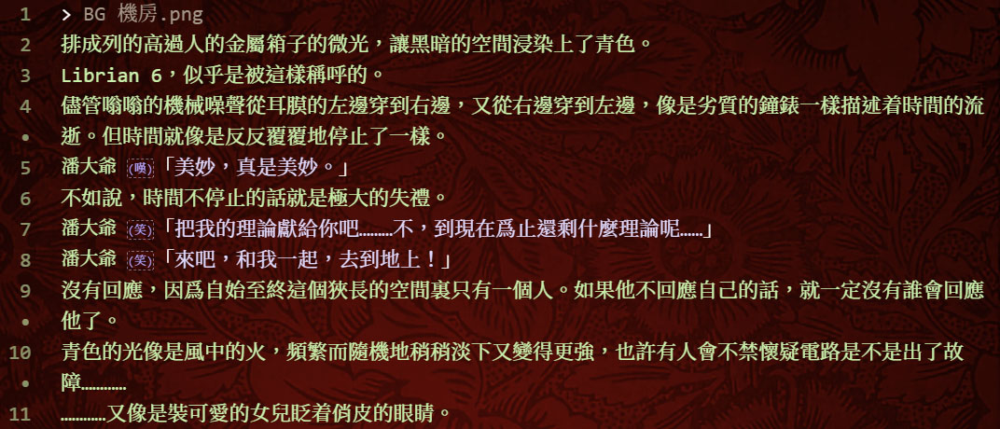
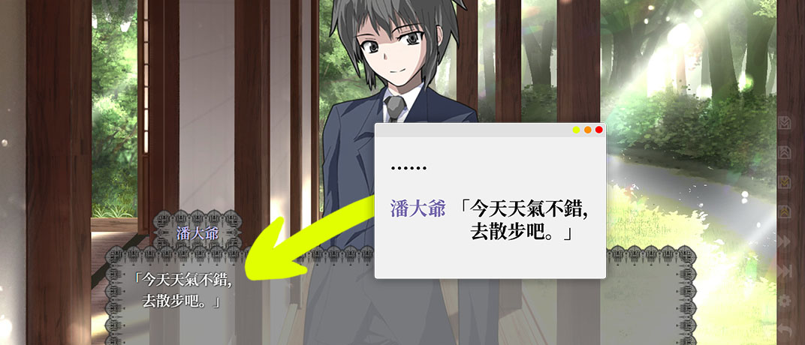

Librian
世界第一的galgame引擎
下載
(203 MB)
Librian v1910

劇本語法清晰自然
製作黃油很快很簡單。劇本語法取材於真實的劇本，只需要稍加瀏覽就能立即明白。
全自動演出
Librian提供了智能的立繪控制邏輯，包括位置、表情差分、可見性。幾乎無需手動操作。

同步展示演出效果
實時顯示劇本的目標效果，避免被水淹沒不知所措。
嵌入代碼
也可在Librian劇本中直接嵌入python和js，以控制後端和前端。
一分鐘的演示視頻
帕秋莉♂GO！
立馬下載Librian！
Librian Center 籌建中！
Librian Center是自由免費的Librian項目分享平臺。
在這裏發佈或連載你的作品，說不定是一個不錯的選擇。
不過可能需要一個github帳號才能使用。
還有示意圖的文字讓我感到了我真是天才！
♞ | MPL-2.0 | 屬於 リモ＠magic-lib | 2019